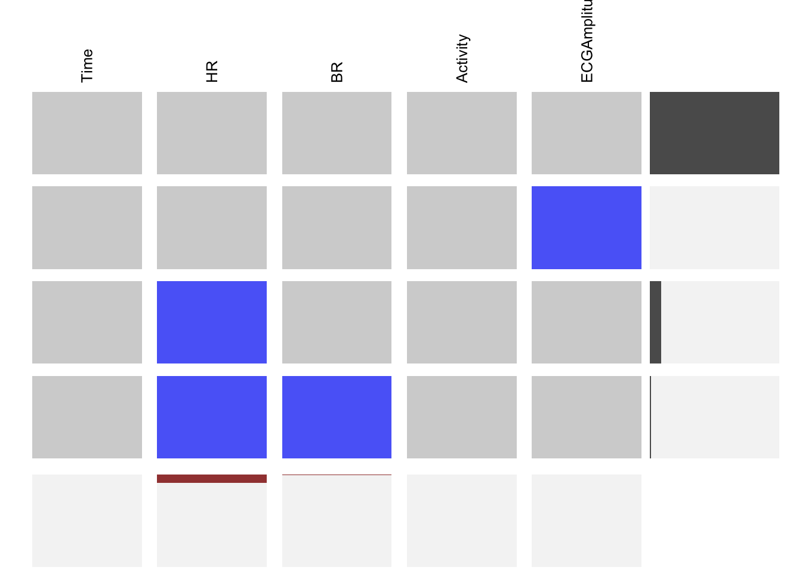

Chapter 4 Missing values
The data set has missing values, because of the following cases during the data collection period:
- In some cases, people forgot to note down the measured glycemic values or they had problems with the BioHarness wearable device
People were asked to wear the BioHarness sensor during the 4 days when these measurements were taken. The following graph has a threshold for 4 days to check how many people didn’t record for all 4 days. We can observe that healthy people recorded their glucose readings for all 4 days in fact some for even more than 4 days. One of the diabetic patient recorded glucose values for two days. In general, the glucose recordings doesn’t have major missing values.
- Analyzing missing values from wearable sensor data signals.
Dataframe is construced containing sensors value for all the people. The first few rows correspond to diabetic patients and the latter half contains the healthy people data.
The blue cells represent the missing values. Heart rate and breathing rate have all it’s missing values at the end of our dataset which comprises of healthy people. For variable ECG the missing values are distributed all over the healthy and diabetic patient.
The red bar below is the amount of missing values for corresponding variables. We can also notice that ECG is missing for all the recordings in the middle of dataframe. We have very few complete row observations in healthy dataset.
The following information reinforces what paper claims that some people forgot to write down measured values, or had problems with the sensors.
In our case missing values and noisy data is effective and make the dataset even useful. As these problems naturally occur in every healthcare system including wearable devices and people, so these issues would have to be dealt with. This added complexity of dealing with these different parameters, it is important to take into account the potentially missing and noisy data that is commonly acquired under non-clinical conditions.
Evaluating missing values highlights the quality of the dataset and shows its credibility in being used effectively for health monitoring.
